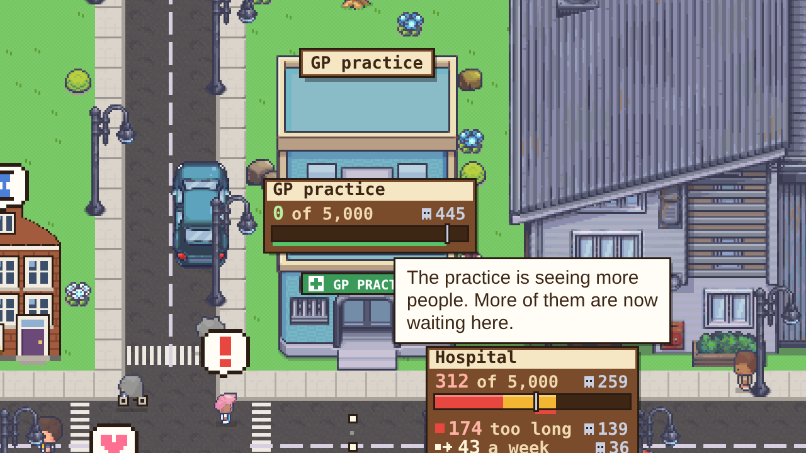
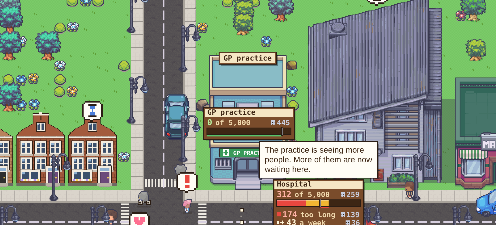
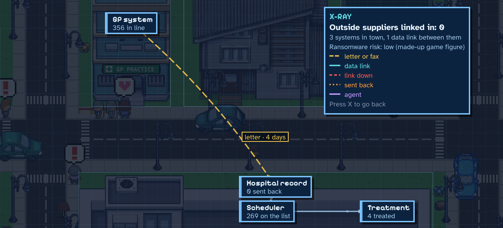

Press kit
Facts, descriptions and pictures for anyone writing about Cammelot. Questions go to contact@cammelot.org.
| Title | Cammelot |
|---|---|
| Made by | Simone Cammel, the Netherlands |
| What it is | A browser game about running the care in a small, made-up Dutch town, with a separate synthetic experiment on AI agents at a hospital referral desk |
| Where to play | cammelot.org/minister, in a browser on a laptop or a phone |
| Price | Free, no account |
| Language | English |
| Length | Four cases of one year, three years, two years and three years of town time, about 10 to 20 minutes each to play (my estimate), and free play |
| On the site | Play, How the model works, Experiments (the Agent Reliability Lab), About and Sources |
| Status | Work in progress. A synthetic model, not a forecast, and not clinically validated |
| Licences | Game code AGPL-3.0, lab code MIT, text and data CC BY 4.0, pixel art by LimeZu under LimeZu's own terms. The code is not public yet. |
| Contact | contact@cammelot.org |
Short description
Cammelot is a free browser game about care in a small, made-up Dutch town. You are the board of its GP practice and hospital, bring in staff, AI tools and IT one measure at a time, and compare the result with the same town where nothing changed. Four short cases each ask one question, such as what happens when AI speeds up the GP but not the hospital.
Long description
Cammelot is a free browser game set in a made-up Dutch town of 5,000 people, about seventy of whom you see in the streets, with one GP practice and one hospital. The player is the board of the care group that runs both, with three advisors: one for money, one for care and one for IT.
Residents fall ill, wait at the GP, are referred and wait again for the hospital. The player hires staff, builds, and buys tools such as an AI scribe, a shared patient record and AI agents for triage and scheduling. Most figures are shown next to Ghost Cammelot, the same town with the same luck where nobody does anything, so a choice can be judged against doing nothing.
The town follows Dutch rates for ages, chronic conditions, GP visits, referrals and natural deaths, and the Treeknorm. It counts the people who wait longer than the Treeknorm, the longest wait the Dutch care sector agreed on (an agreed goal, not a medical limit), and estimates the healthy years lost while waiting from an English study of hip and heart waits; how that applies to each resident is an assumption. Prices and what the tools do are picked for play. It is a way to compare choices, not a forecast. The model has not been clinically validated.
Under Experiments, the Agent Reliability Lab tests a real AI model on synthetic Dutch referral letters. It is a separate synthetic experiment and does not validate the game.
Pictures
Pixel-perfect crops at twice the game's size, and full screenshots at 2560 by 1600. Please credit the pixel art to LimeZu.







- Full screen, case 1 (PNG, 2560 by 1600)
- Full screen, end of case 1 (PNG, 2560 by 1600)
- Full screen, X-ray in case 3 (PNG, 2560 by 1600)
- Six-second clip of the town, no sound (WebM)
- Logo (SVG) and logo on parchment (PNG, 512 by 512)


Credits
Model design and assumptions, research and direction: Simone Cammel. Code and first drafts of the text written with Claude, Anthropic's AI model, under her direction. Pixel art: LimeZu. Music: Simone Cammel, made with Suno. Full credits and licences are on the About page.